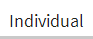

<!DOCTYPE html>
<!-- 
/ Author : Yeaseul Kim
/ Project : E-mail sentiment visualization
/ Last modified at: 2013.05.17
-->

<html>
	<head>
		<!--header information -->
		<title> e-mail sentiment analysis visualization </title>
		<meta charset="utf-8">
		<!--css-->
		<link href="sentiment.css" type="text/css" rel="stylesheet" />	
		<!--js-->
		<script type="text/javascript" src="lib/d3/d3.v3.js"></script>
		<script type="text/javascript" src="lib/jquery-ui-1.10.4.custom/js/jquery-1.10.2.js"></script>
		<script type="text/javascript" src="lib/sentiment.js"></script>
	</head>
	<body>
		<div id="head"> 
			<div id="head_left"> </div>
			<div id="head_right"> </div>
		</div>
		<div id="main">
			<div id="main-left"> </div>
			<div id="main-right">
<!--			<div id="contents">
					<div class="menu">  </div> 
					<div class="menu">  </div>
					<div class="group_clear"> Most positive groups </div>
					<div class="group">  </div>
					<div class="group">  </div>
					<div class="group">  </div>
					<div class="group">  </div>
				</div>-->
			</div>
		</div>
		<div id="bottom"> </div>
	</body>
</html>